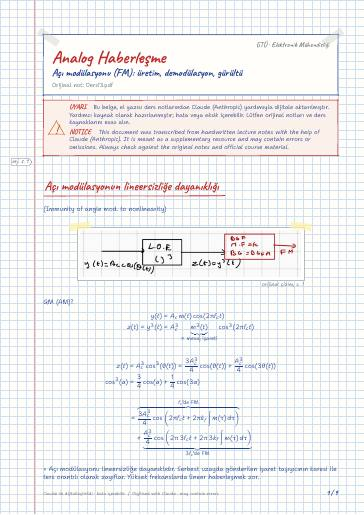

Analog Haberleşme · Dijital ders notu
Açı modülasyonu (FM): üretim, demodülasyon, gürültü
- Ders
- Analog Haberleşme (ELM361)
- Dönem
- 5. Dönem · 2023–2024 Güz
- Biçim
- PDF · 9 sayfa · 0,5 MB · el yazısı görünümlü LaTeX
- Orijinal not
- Ders13.pdf

The digital notes were created from the handwritten notes with the help of Claude (Anthropic); they are meant as a supplementary resource and may contain errors. Always rely on the original notes and the official course materials.
Bu notta neler var?
- Açı modülasyonun lineersizliğe dayanıklığı
- FRM (FM)'nin üretilmesi
- 1) Dolaylı metod (Indirect method)
- 2) Direk metod (Direct method)
- FRM (FM)'nin Dönüşümü
- Pratik FM demodülatörleri
- Açı modülasyonunda karışım (interferance)
- AWGN: kanal gürültüsü
- Proakis, S.294–295
- Süper heterodin FM alıcısı
- Eşik değeri etkisi (Treshold effect)
- Modülasyon Tekniklerinin karşılaştırılması
Notun metni
Düz metin olarak göster (formüller ve çizimler yoktur)
Açı modülasyonun lineersizliğe dayanıklığı
(Immunity of angle mod. to nonlinearity)
Açı modülasyonu lineersizliğe dayanıklıdır. Serbest uzayda gönderilen işaret taşıyıcının karesi ile ters orantılı olarak zayıflar. Yüksek frekanslarda lineer haberleşmek zor.
Gürültüye GM'e göre FM daha iyi baskılar. (Armstrong)
Signal-to-Noise Ratio (SNR) Alıcının son katında hesaplanır
BG^2 \Bant genişliğinin karesi ile orantılı\ FM'de
Bant genişliğine büyük yapınca
Daha az güçle daha yüksek performans.
Uydu haberleşmesine çok uygundur. gücü düşük, az güç demek daha az karmaşık ve daha hafif bir sistem demek.
Ayrıca zarfının sabit olması, sönümlenmeye karşı bir bağışıklık kazandırıyor.
Tek yanbantı çoklanmış işaretler mikrodalga ile iletirken kullanılır. TV'de görüntü için VSB ses için FM
FRM (FM)'nin üretilmesi
1) Dolaylı metod (Indirect method)
– Genlik ve faz bozulmasına sebep olur
2) Direk metod (Direct method)
Voltage controlled Oscillator (VCO)
Gerilim kontrollü Osilatör (GKO)
Girişine uygulanan gerilimle çıkış frekansı değişiyor
GKO: (Razitin kitabı)
İşlem kuvvetlendiricisi + histerik karşılaştırıcı) (Schmitt tetikleyici devre)
Bir osilatörün L,C parametreleri oynanarak gerçekleştirilebilir.
varicap: gerilime göre kapasite değişir
Hartley veya Colpitt osilatörlerinde osilasyon frekansı:
– frekans kararlılığı çok iyi değil onun için freq kararlılığı iyi olan bir osilatörle karşılaştırılır.
FRM (FM)'nin Dönüşümü
Bu metodun uygulanabilmesi için A_c 'nin sabit olması lazım
Pratik FM demodülatörleri
Balanced modulators; Slope detector/ balanced discriminator; ratio detector
Zero-crossed detector
Phase Locked loop (PLL)
Faz kilitlemeli döngü (FKD) (Düşük maliyetli ve yüksek performanslı diğerlerine göre)
Açı modülasyonunda karışım (interferance)
Başta FM sonra PM gibi çalışsın isteriz
AWGN: kanal gürültüsü
2,1 khz kritik frekans
Sesin zayıf olduğu frekanslarda kuvvetlendirir gürültüye bağışıklık kazanır.
Ticari FM yayınında RC=75 μsn
gürültüyü azaltıyor ve performansı artırır
Ön vurgulama ve son vurgulama filtreleri SNR'yi 13,27 dB arttırır (21,23) kat
Süper heterodin FM alıcısı
Ticari FM yayınında
Ön vurgulama / son vurgulama kullanılır
İlk yayın mono sonra stereo oldu
Eşik değeri etkisi (Treshold effect)
sinüsoidal mesaj işaretleri için
SNR_b (dB) temel bantta (Girişteki gürültü gücü)
Modülasyon Tekniklerinin karşılaştırılması